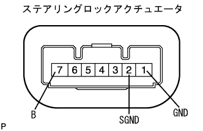

Steering Lock System Steering Lock Is Not Released (Engine Cannot Be Started) |
| Step 1 | Operation Check |
Depress the brake pedal, push the engine switch and check that the engine starts.
|
| ||||
| OK | |
| Step 2 | Check DTC Output |
Using SST (TaSCAN), check whether any main body ECU diagnostic trouble codes are output. (see)
| Result | Proceed to |
|---|---|
| No main body ECU malfunction code output | A |
| Main body ECU malfunction code output | B |
|
| ||||
| A | |
| Step 3 | Check DTC Output |
Using SST (TaSCAN), confirm that no certification ECU diagnostic trouble codes are output (see).
| Result | Proceed to |
|---|---|
| No certification ECU malfunction code output | A |
| Certification ECU malfunction code output | B |
|
| ||||
| A | |
| Step 4 | Read TaSCAN Data |
Connect SST (TaSCAN) to DLC3.
Within 10 seconds of performing the engine starting operation, read the certification ECU data monitor and check [Steering Lock Operation Request Reception History]. (see)
|
| ||||
| OK | |
| Step 5 | Inspect Steering Lock Actuator Assembly (B, Voltage, GND and SGND Continuity) |
 |
Using SST (Toyota electrical tester), measure the resistance between each terminal of the steering lock actuator and body ground.
| Tester Connection | Condition | Standard |
|---|---|---|
| 1 (GND) - Body ground | Always | Below 1 Ω |
| 2 (SGND) - Body ground | Always | Below 1 Ω |
With the IG OFF and IG ON, inspect the voltage between the terminals of the steering lock actuator.
| Tester Connection | Condition | Standard |
|---|---|---|
| 7(B) - 1(GND) | Always | 11 to 14 V |
| 7(B) - 2(SGND) | Always | 11 to 14 V |
|
| ||||
| OK | |
| Step 6 | Inspect Steering Lock Actuator Assembly (IGE Continuity) |
 |
Using SST (Toyota electrical tester), inspect the voltage between steering lock actuator terminals 3 (IGE) ←→ 2 (SGND) immediately after the IG is turned ON.
| Result | Proceed to |
|---|---|
| 1 V or less occurs immediately after IG ON | A |
| Remains at 11to14 V and never drops to 1 V or less | B |
|
| ||||
| A | ||
| ||
| Step 7 | Read TaSCAN Data |
Using SST (TaSCAN), read the certification ECU data monitor and check [S Code Verification Result]. (Refer to procedure)
|
| ||||
| OK | |
| Step 8 | Read TaSCAN Data |
Using SST (TaSCAN), read the certification ECU data monitor and check [L Code Verification Result]. (Refer to procedure)
|
| ||||
| OK | |
| Step 9 | Replace Steering Lock Actuator Assembly |
Replace the steering actuator with a new one. (see)
Turn IG ON.
Operate the steering wheel and check the steering lock status.
|
| ||||
| OK | ||
| ||
| Step 10 | Replace Immobiliser Code Computer (ID Code Box) |
Replace the immobiliser code computer (ID code box) with a new one.
Using SST (TaSCAN) again, read the certification ECU data monitor and check [S Code Verification Result]. (see)
|
| ||||
| OK | ||
| ||
| Step 11 | Replace Immobiliser Code Computer (ID Code Box) |
Replace the immobiliser code computer (ID code box) with a new one.
Using SST (TaSCAN) again, read the certification ECU data monitor and check [L Code Verification Result]. (see)
|
| ||||
| OK | ||
| ||